Oscilloscope à quatre canaux, et plus¶
Eyes17 est livré avec une application dont l’interface utilisateur par défaut est un oscilloscope à quatre canaux amélioré.
- Lien vers des vidéos YouTube
- Le programme d’oscilloscope à quatre canaux fonctionne à peu de choses près comme un oscilloscope avec des entrées nommées A1, A2, A3 and MIC.
- Ajuster la sensibilté en X de l’écran, à l’aide du curseur de Base de Temps, en général pour observer plusieurs périodes du signal.
- Si le signal n’est pas stable choisir la source appropriée pour la fonction « trigger ». Si nécessaire ajuster le seuil du « trigger ».
- On peut enregistrer les traces dans un fichier, à un format texte. On peut prendre la transformée de Fourier et visualiser le spectre de fréquence du signal d’entrée.
- Le programme d’oscilloscope a aussi de widgets de contrôle sur le panneau de droite pour accéder à la plupart des fonctionnalités d’ExpEYES.
- Les entrées A1, A2, A3 et les résistances connectées à SEN sont mesurées et leurs valeurs affichées chaque seconde. Mais ces affichages n’ont pas de sens quand on connected des sources alternatives.
- Pour les entrées en courant alternatif, on peut cocher les cases à droite du widget de canal pour lire la tension de crête et la fréquence.
- Les branchements d’entrée/sortie d’ExpEYES sont brièvement décrits ci-dessous.

Branchements de sortie¶
- CCS: source courant constant de 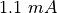, on l’active et on la désactive à l’aide du bouton à cocher CCS.
- PV1: Tension programmable, dans l’intervalle 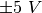. On peut la régler à l’aide du curseur ou à l’aide d’une entrée texte.
- PV2: comparable à PV1, mais pour l’intervalle
 à 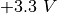
à 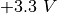 - SQ1: Générateur de signal carré, variant entre
 et 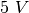.
La fréquence est réglable de 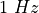 à
et 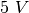.
La fréquence est réglable de 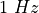 à  .
. - SQ2: comme SQ1, mais disponible comme une option de WG.
- OD1: Sortie numérique, sa tension peut être ou .
- WG: Générateur de basse fréquence. La fréquence est entre
et . On peut régler l’amplitude à 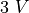, 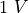
ou 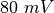.
Le signal peut être sinusoïdal, triangulaire ou carré. En mode signal
carré, la sortie est sur SQ2, avec une excursion de à .
- -WG: Sortie de WG inversée.

Branchements d’entrée¶
- IN1: Entrée pour mesurer la capacité d’un condensateur. Un bouton-poussoir permet de lancer la mesure.
- IN2: Entrée pour mesurer la fréquence de signaux numériques, qui
varient entre et 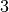 à .
Un bouton-poussoir permet de lancer la mesure.
- SEN: Entrée pour mesurer la résistance. Ce point est rappelé en interne à 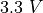 via une résistance de 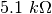.
- A1: Entrée de mesure de tension, fonctionne comme voltmètre ou comme oscilloscope. Le calibre maximal est 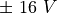, on choisit le calibre depuis un menu déroulant. On peut choisir le mode de couplage continu/alternatif à l’aide d’un contact à glissière sur le boîtier.
- A2: Identique à A1, mais sans couplage alternatif.
- A3: Entrée de mesure de tension pour
 . On peut
amplifier les signaux faibles en connectant une résistance entre Rg et
GND.
. On peut
amplifier les signaux faibles en connectant une résistance entre Rg et
GND. - MIC: Entrée à microphone (à condensateur), son signal apparaît comme le canal quatre de l’oscilloscope.
- Rg: Résistance de gain pour A3. 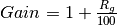.
Par exemple, si on connecte une résistance de 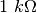 on obtient
un gain de
 .
.